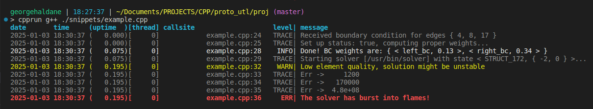
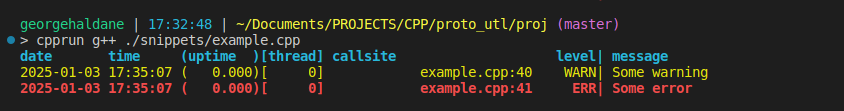

utl::log (experimental)
utl::log module aims to provide simple logging facilities for prototyping and small projects.
Goals:
- Intuitive simple to use API
- Unintrusive macros
- Nicely colored formatting that is easy to look at and to
grep - Concise syntax (no
<<orprintf-like specifiers), just list the arguments and let the variadic handle formatting and conversion - Reasonably fast performance (in most cases faster than logging things with
std::ofstream) - Thread-safe logging with no interweaving messages
Key features:
- Supports multiple sinks
- Supports indentation
- Stringifies arbitrary types based on their type traits
Definitions
// Padding wrappers
template <class T> struct PadLeft { constexpr PadLeft( const T& val, std::size_t size); }
template <class T> struct PadRight { constexpr PadRight(const T& val, std::size_t size); }
template <class T> struct Pad { constexpr Pad( const T& val, std::size_t size); }
// Extendable stringifier (advanced feature)
template <class Derived>
struct StringifierBase {
template <class T> static void append_bool( std::string& buffer, const T& value);
template <class T> static void append_int( std::string& buffer, const T& value);
template <class T> static void append_float( std::string& buffer, const T& value);
template <class T> static void append_complex( std::string& buffer, const T& value);
template <class T> static void append_string( std::string& buffer, const T& value);
template <class T> static void append_array( std::string& buffer, const T& value);
template <class T> static void append_tuple( std::string& buffer, const T& value);
template <class T> static void append_printable(std::string& buffer, const T& value);
template <class T> static void append(std::string& buffer, const T& value);
template <class... Args> static void append(std::string& buffer, const Args&... args);
template <class... Args> static std::string stringify(Args&&... args);
template <class... Args> std::string operator()(Args&&... args);
};
// Stringification & printing
struct Stringifier { /* same API as StringifierBase<> */ };
template <class... Args> void append_stringified(std::string& buffer, Args&&... args);
template <class... Args> std::string stringify(Args&&... args);
template <class... Args> void print( Args&&... args);
template <class... Args> void println(Args&&... args);
// Logging options
enum class Verbosity { ERR, WARN, NOTE, INFO, DEBUG, TRACE };
enum class OpenMode { REWRITE, APPEND };
enum class Colors { ENABLE, DISABLE };
struct Columns {
bool datetime = true;
bool uptime = true;
bool thread = true;
bool callsite = true;
bool level = true;
bool message = true;
};
// Logger sink
struct Sink {
Sink& set_verbosity(Verbosity verbosity);
Sink& set_colors(Colors colors);
Sink& set_flush_interval(clock::duration flush_interval);
Sink& set_flush_interval(const Columns& columns);
Sink& skip_header(bool skip = true);
};
Sink& add_ostream_sink(
std::ostream& os,
Verbosity verbosity = Verbosity::INFO,
Colors colors = Colors::ENABLE,
clock::duration flush_interval = std::chrono::milliseconds{},
const Columns& columns = Columns{}
);
Sink& add_file_sink(
const std::string& filename,
OpenMode open_mode = OpenMode::REWRITE,
Verbosity verbosity = Verbosity::TRACE,
Colors colors = Colors::DISABLE,
clock::duration flush_interval = std::chrono::milliseconds{15},
const Columns& columns = Columns{}
);
// Logging macros
#define UTL_LOG_ERR(...)
#define UTL_LOG_WARN(...)
#define UTL_LOG_NOTE(...)
#define UTL_LOG_INFO(...)
#define UTL_LOG_DEBUG(...)
#define UTL_LOG_TRACE(...)
#define UTL_LOG_DERR(...)
#define UTL_LOG_DWARN(...)
#define UTL_LOG_DNOTE(...)
#define UTL_LOG_DINFO(...)
#define UTL_LOG_DDEBUG(...)
#define UTL_LOG_DTRACE(...)
Methods
Padding wrappers
template <class T> struct PadLeft { constexpr PadLeft( const T& val, std::size_t size); }
template <class T> struct PadRight { constexpr PadRight(const T& val, std::size_t size); }
template <class T> struct Pad { constexpr Pad( const T& val, std::size_t size); }
Wrappers used to pad values with specific alignment when using this module's stringification.
| Padding wrapper | Equivalent std::ostream operator |
Example for { "text", 10 } |
|---|---|---|
PadLeft{ val, size } |
<< std::setw(size) << std::right << val |
<text> |
PadRight{ val, size } |
<< std::setw(size) << std::left << val |
<text> |
Pad{ val, size } |
No center alignment function in the standard library | <text> |
Extendable stringifier (advanced feature)
template <class Derived> struct StringifierBase is compile-time polymorphism base used to build custom stringifier.
It is an advanced feature and not need for the regular logging, see section at the end for a proper usage guide.
Stringification & printing
struct Stringifier { /* ... */ };
Functor class that contains stringification logic of this module. Can be used to provide third-party APIs with stringification logic of utl::log.
Compatible with utl::mvl formatters.
template <class... Args> void append_stringified(std::string& buffer, Args&&... args);
Stringifies all args... and appends them to a string buffer.
template <class... Args> std::string stringify(Args&&... args);
Stringifies all args... and concatenates them into a string.
template <class... Args> void print( Args&&... args);
template <class... Args> void println(Args&&... args);
Stringifies all args... and prints the result to std::cout.
println() also starts a new line at the end.
Note: print-functions are thread-safe and flush their output instantly.
Logging options
enum class Verbosity { ERR, WARN, NOTE, INFO, DEBUG, TRACE };
Enumeration that determines verbosity level of the logger sink. Sinks will only output messages that are at or above the their priority. Different levels have following priorities:
| Verbosity level | Priority | Logging style |
|---|---|---|
ERR |
0 | 🔴 Bold red |
WARN |
1 | 🟡 Yellow |
NOTE |
2 | 🟣 Magenta |
INFO |
3 | ⚪ White |
DEBUG |
4 | 🟢 Green |
TRACE |
5 | ⚫ Gray |
Note 1: "Logging style" column applies only of sink colors are set toColors::ENABLE.
Note 2: By default std::ostream sinks will have verbosity level INFO, while file sinks will have verbosity level TRACE.
enum class OpenMode { REWRITE, APPEND };
Enumeration that determines whether file sinks opens the file for rewrite or appends to it.
Note: By default file sinks will open in a REWRITE mode, use APPEND if you want to grow an existing log.
enum class Colors { ENABLE, DISABLE };
Enumeration that determines whether the sink uses ANSI color codes to color its output.
This should work in most modern terminals.
Note: By default std::ostream sinks will be colored, while file sinks will have their colors disabled.
struct Columns {
bool datetime = true;
bool uptime = true;
bool thread = true;
bool callsite = true;
bool level = true;
bool message = true;
};
POD struct that determines which columns should be formatted and logged.
Logger sink
struct Sink {
Sink& set_verbosity(Verbosity verbosity);
Sink& set_colors(Colors colors);
Sink& set_flush_interval(clock::duration flush_interval);
Sink& set_flush_interval(const Columns& columns);
Sink& skip_header(bool skip = true);
};
Class that represents a logger sink (whether it is an std::ofstream reference or a managed file).
set_...() methods can be used to modify sink options using a reference returned by add_ostream_sink() or add_file_sink(), rather than passing them all the start.
skip_header() method disables the line with column titles at the start, this is mainly useful for appending new data to an existing log.
Sink& add_ostream_sink(
std::ostream& os,
Verbosity verbosity = Verbosity::INFO,
Colors colors = Colors::ENABLE,
clock::duration flush_interval = std::chrono::milliseconds{},
const Columns& columns = Columns{}
);
Adds sink to ostream os with a given set of options. Returns reference to the added sink.
Sink& add_file_sink(
const std::string& filename,
OpenMode open_mode = OpenMode::REWRITE,
Verbosity verbosity = Verbosity::TRACE,
Colors colors = Colors::DISABLE,
clock::duration flush_interval = std::chrono::milliseconds{15},
const Columns& columns = Columns{}
);
Adds sink to the log file filename with a given set of options. Returns reference to the added sink.
Logging macros
#define UTL_LOG_ERR(...)
#define UTL_LOG_WARN(...)
#define UTL_LOG_NOTE(...)
#define UTL_LOG_INFO(...)
#define UTL_LOG_DEBUG(...)
#define UTL_LOG_TRACE(...)
Stringifies arguments ... and logs them at the corresponding verbosity level.
#define UTL_LOG_DERR(...)
#define UTL_LOG_DWARN(...)
#define UTL_LOG_DNOTE(...)
#define UTL_LOG_DINFO(...)
#define UTL_LOG_DDEBUG(...)
#define UTL_LOG_DTRACE(...)
Logging macros that only compile in debug mode.
Examples
Logging to the terminal
[ Run this code ]
using namespace utl;
using namespace std::chrono_literals;
// Create some complex objects that need logging
auto vertex_ids = std::vector{4, 8, 17};
auto success = true;
auto weights = std::map{ std::pair{ "left_bc", 0.13}, std::pair{"right_bc", 0.34} };
auto solver = std::filesystem::path{"/usr/bin/solver"};
auto state = std::tuple{ "STRUCT_172", std::set{0, -2} };
// Log stuff to console
UTL_LOG_TRACE("Received boundary condition for edges ", vertex_ids);
UTL_LOG_TRACE("Set up status: ", success, ", computing proper weights...");
std::this_thread::sleep_for(75ms);
UTL_LOG_INFO("Done! BC weights are: ", weights);
UTL_LOG_TRACE("Starting solver [", solver, "] with state ", state, "...");
std::this_thread::sleep_for(120ms);
UTL_LOG_WARN("Low element quality, solution might be unstable");
UTL_LOG_TRACE("Err -> ", log::PadLeft{1.2e+3, 8});
UTL_LOG_TRACE("Err -> ", log::PadLeft{1.7e+5, 8});
UTL_LOG_TRACE("Err -> ", log::PadLeft{4.8e+8, 8});
UTL_LOG_ERR("The solver has burst into flames!");
// no sinks were specified => 'std::cout' chosen by default
Output:

Logging to multiple sinks
[ Run this code ]
using namespace utl;
// Log everything to file
log::add_file_sink("verbose.log").set_verbosity(log::Verbosity::TRACE);
// Log meaningful events to a separate file with colors enabled for easier viewing
log::add_file_sink("info.log").set_verbosity(log::Verbosity::INFO).set_colors(log::Colors::ENABLE);
// Instead of calling 'set_...()' we can also pass arguments directly into 'add_..._sink()' function,
// let's also append all logs to a persistent file that doesn't get rewritten between executions
log::add_file_sink("history.log", log::OpenMode::APPEND).skip_header();
// Add another file for logged messages only (no date/uptime/thread/callsite columns)
log::Columns cols;
cols.datetime = false;
cols.uptime = false;
cols.thread = false;
cols.callsite = false;
log::add_file_sink("messages.log").set_columns(cols);
// Log warnings and errors to 'std::cerr'
log::add_ostream_sink(std::cerr, log::Verbosity::WARN, log::Colors::ENABLE);
// Log some stuff
UTL_LOG_DTRACE("Some meaningless stuff"); // 'D' prefix means this will only compile in debug
UTL_LOG_INFO("Some meaningful stuff");
UTL_LOG_WARN("Some warning");
UTL_LOG_ERR("Some error");
Output:

+ several log files created
Printing & stringification
[ Run this code ]
// A custom printable type
struct SomeCustomType {};
std::ostream& operator<<(std::ostream& os, SomeCustomType) {
return os << "<custom type string>";
}
// ...
using namespace utl;
// Printing
log::println("Print any objects you want, for example: ", std::tuple{ "lorem", 0.25, "ipsum" });
log::println("This is almost like Python!");
log::println("Except compiled...");
// Stringification
assert( log::stringify("int is ", 5) == "int is 5" );
assert( log::stringify(std::array{ 4, 5, 6 }) == "{ 4, 5, 6 }" );
assert( log::stringify(std::pair{ -1, 1 }) == "< -1, 1 >" );
assert( log::stringify(SomeCustomType{}) == "<custom type string>" );
// ...and so on for any reasonable type including nested containers,
// if you append values to an existing string 'log::append_stringified(str, ...)'
// can be used instead of ' += log::stringify(...)' for even better performance
Output:
Print any objects you want, for example: < lorem, 0.25, ipsum >
This is almost like Python!
Except compiled...
Advanced guide to custom stringifiers
In some cases, it can be quite beneficial to declare a custom stringifier that uses a generic logic of this module's stringification, but adds a few alterations. The usual use cases for this include:
- Adding decorators for text-based export formats (JSON, LaTeX, Mathematica, etc.)
- Adding type-specific optimizations
- Customizing formatting to taste
The structure of StringifierBase<> can be described by a following call graph:
template <class... Args> std::string operator()(Args&&... args);
// Calls ->
template <class... Args> static std::string stringify(Args&&... args);
// Calls ->
template <class... Args> static void append(std::string& buffer, const Args&... args);
// Calls multiple times ->
template <class T> static void append(std::string& buffer, const T& value);
// Calls one of ->
template <class T> static void append_bool( std::string& buffer, const T& value);
template <class T> static void append_int( std::string& buffer, const T& value);
template <class T> static void append_enum( std::string& buffer, const T& value);
template <class T> static void append_float( std::string& buffer, const T& value);
template <class T> static void append_complex( std::string& buffer, const T& value);
template <class T> static void append_string( std::string& buffer, const T& value);
template <class T> static void append_array( std::string& buffer, const T& value);
template <class T> static void append_tuple( std::string& buffer, const T& value);
template <class T> static void append_adaptor( std::string& buffer, const T& value);
template <class T> static void append_printable(std::string& buffer, const T& value);
By inheriting it with CRTP we can inject additional logic into that chain to customize behavior.
Examples
Add additional formatting to values
Let's say we want a version of stringifier that adds $ around the floats so we can export them to LaTeX as formulas. To do so we can declare a derived class that overrides append_bool() with additional behavior:
struct LaTeXStringifier : public log::StringifierBase<LaTeXStringifier> {
using base = log::StringifierBase<LaTeXStringifier>;
template <class T>
static void append_float(std::string &buffer, const T& value) {
buffer += '$';
base::append_float(buffer, value);
buffer += '$';
}
};
This new stringifier will now wrap all floats in dollar signs:
assert( log::Stringifier{}(0.5) == "0.5" );
assert( log::LaTeXStringifier{}(0.5) == "$0.5$" );
// Works in compound types too
assert( log::Stringifier{}(std::array{ 0.5, 2.5 }) == "{ 0.5, 2.5 }" );
assert( log::LaTeXStringifier{}(std::array{ 0.5, 2.5 }) == "{ $0.5$, $2.5$ }" );
Override formatting of specific types
Let's say we want out stringifier to handle std::vector<int> in a completely specific way and print it as integers: [ 1 2 3 ... ] instead of the usual { 1, 2, 3, ... }. To do so we can add overloads of append() for that type, overloads will take priority over the template:
struct SpecialStringifier : public log::StringifierBase<SpecialStringifier> {
using base = log::StringifierBase<SpecialStringifier>;
// Bring base class 'append()' here so we don't shadow it
using base::append;
// Declare overloads for types with specific formatting
static void append(std::string &buffer, const std::vector<int> &value) {
buffer += "integers: [ ";
for (auto e : value) buffer += std::to_string(e) + " ";
buffer += " ]";
}
};
This new stringifier will now format std::vector<int> in a unique way:
assert( log::Stringifier{}(std::vector{ 1, 2, 3 }) == "{ 1, 2, 3 }" );
assert( log::SpecialStringifier{}(std::vector{ 1, 2, 3 }) == "integers: [ 1 2 3 ]" );
Trivia: The underlying mechanism that allows us to do this is based the on standard overload resolution priority, which is regular functions > template functions > variadic template functions.
Note: The same technique can be used to add optimizations for specific types, for example, log::FastStringifier adds overloads for faster formatting of singular integers that don't require any of the "appending" logic.
Make custom type compatible with stringifier
Most custom containers should be compatible with log::Stringifier (and by consequence, log::stringify(), log::println() and etc.) out of the box, the stringifier will automatically expand over the type T recursively as long as it fits into one of the following groups:
| Group | Priority | Criteria |
|---|---|---|
append_bool() |
1 | T is bool |
append_string() |
2 | T is char or convertible to std::string / std::string_view |
append_int() |
3 | T is integral |
append_enum() |
4 | T is enumeration |
append_float() |
5 | T is floating point |
append_complex() |
6 | T has real(), imag() methods |
append_array() |
7 | T has begin(), end() methods that return an incrementable iterator |
append_tuple() |
8 | T supports std::get<>() and std::tuple_size() |
append_adaptor() |
9 | T has member type container_type |
append_printable() |
10 | T supports std::ostream output with operator << |
If none of this is the case, the easiest way would be to just declare an std::ostream output operator like this:
std::ostream& operator<<(std::ostream os, const CustomType& value) {
return os << "<some string corresponding to the value>";
}
A more "proper" and performant way however, would be to create a custom stringifier that has an overload for CustomType like it was done in previous example.